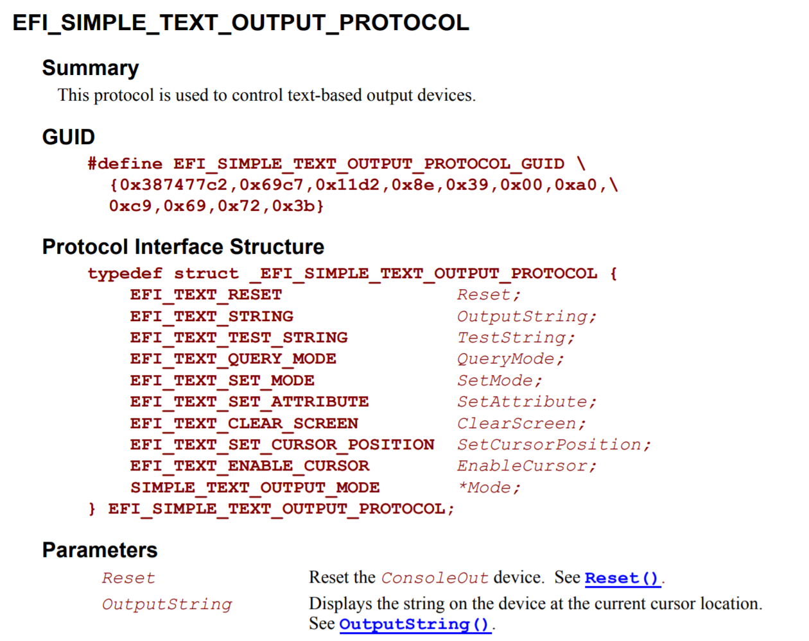

遵循UEFI标准编写程序
阅读UEFI标准文档的方法
UEFI标准文档可以在 https://uefi.org/specifications 找到。本书参照的的是2.3.1版本1。但是，对于本书中所涉及的范围，在不同的UEFI标准版本或是实现下，几乎不存在兼容性问题。
UEFI标准文档包括C代码片段，并且UEFI固件上所运行的程序基本上都是用C语言编写的。例如，在UEFI标准文档"4.1 UEFI Image Entry Point(P.75)"中，定义了UEFI程序的入口点2（图2.1）。

图2.1：标准文档中定义的入口点
图2.1中展示了入口点函数的参数和返回值。由于入口点函数是通过编译期参数指定的，它可以取任何名字。参数和返回值被定义成了特殊的类型，这些类型也可以在标准文档中找到。比如在标准文档中搜索EFI_STATUS，我们可以找到"2.3.1 Data Types(P.23)"（图2.2）。

图2.2："2.3.1 Data Types" 中的 "Table 6. Common UEFI Data Types"（节选）
图2.2展示了标准文档中常见类型的定义。在这里，EFI_STATUS表示的是状态码，它的类型是UINTN。UINTN是一个与平台相关的类型，在32位CPU上，它表示32位无符号整数（unsigned int），而在64位CPU上，它表示64位无符号整数（unsigned long long）3。
此外，UEFI标准中还定义了IN、OUT、OPTIONAL、EFIAPI等修饰符（Modifier），它们是对函数或参数的说明。在像EDK2或是gnu-efi这些既有的开发环境和工具链中4，它们均被定义为空字符串。
但是在上表中，我们并不能找到"EFI_SYSTEM_TABLE"的定义。这是由于EFI_SYSTEM_TABLE是一个结构体的别名，它在另一个章节被定义。通过搜索标准文档，它在"4.3 EFI System Table(P.78)"中被定义，并且它也有一个C语言代码的定义（图2.3）。

图2.3：EFI_SYSTEM_TABLE的定义
图2.3展示了结构体中的成员。UEFI标准文档中有一个叫做“协议（Protocol）”的概念。在UEFI中，功能被分为一个个单元，这些单元被称为“协议”，并且它们被定义成以_PROTOCOL结尾的结构体。名如~_PROTOCOL这样的结构体包含一系列的函数指针，通过这些函数指针可以调用UEFI固件中的内置功能。
图2.3中的EFI_SIMPLE_TEXT_OUTPUT_PROTOCOL是用来把字符输出到屏幕上的协议。那么它有哪些成员那？同样地，我们搜索标准文档，可以在"11.4 Simple Text Output Protocol(P.424)"中找到这个结构体的定义（图2.4）。

图2.4：EFI_SIMPLE_TEXT_OUTPUT_PROTOCOL的定义
查看图2.4中的"Protocol Interface Structure"，可以看到它有一个叫做"OutputString"的成员，这就是被用于在屏幕上显示文字的函数。图2.4中的"Parameters"是对各个成员的描述，并且"OutputString"拥有一个指向其定义页面的链接（下划线的"OutputString()"处）。OutputString在标准文档中的定义如图2.5所示。

图2.5：OutputString函数的定义
它的参数的含义如下：
IN EFI_SIMPLE_TEXT_OUTPUT_PROTOCOL *This: 指向EFI_SIMPLE_TEXT_OUTPUT_PROTOCOL自身的指针IN CHAR16 *String: 指向输出的字符串的指针，UEFI的字符是Unicode编码的（2字节/UCS-2）
返回值类型为EFI_STATUS(在AMD64平台上是uint64_t)。这个值表示函数的执行结果。函数如果执行成功，那么返回0，如果产生错误或警告返回非0值。本书中只检查“函数是否返回0”（即函数是否成功执行），对于其他的函数返回值，请参考标准文档"Appendix D Status Codes(P.1873)"中对各个协议返回值的描述。
由于UEFI所有协议中函数的第一个参数均为指向协议自身的指针，并且返回值类型均为EFI_STATUS类型。在接下来的章节中这点将作为约定，不再进行说明。
此外，由于部分UEFI固件启动时会在屏幕上显示内容（比如厂商的logo），在这里，我们先进行一次清屏操作，再调用OutputString在屏幕上打印字符串。
用于清屏的函数是EFI_SIMPLE_TEXT_OUTPUT_PROTOCOL中的ClearScreen函数（标准文档"11.4 Simple Text Output Protocol(P.437)"）。虽然不在图2.4中，但它的描述仍然在"Parameters"中。ClearScreen的定义如图2.6所示，它的参数只有一个指向协议自身的This指针。

图2.6: ClearScreen的定义
在接下来的章节中，将会在示例代码中说明函数参数的定义。
编写UEFI应用程序
了解了入口点的标准和如何调用函数来向屏幕中打印字符串之后，是时候编写一个hello world程序了。这一章的示例代码在目录hello中 (日文版为sample1_1_hello_uefi)。
在本书中使用的开发环境为Debian GNU/Linux，这是作者的工作环境。但是，你可以在几乎任何支持交叉编译和格式化U盘（具体将在之后叙述）的环境下开发。当然，任何文本编辑器都可以。
在屏幕上打印"Hello UEFI!"的源代码如代码2.1所示。
struct EFI_SYSTEM_TABLE {
char _buf[60];
struct EFI_SIMPLE_TEXT_OUTPUT_PROTOCOL {
unsigned long long _buf;
unsigned long long (*OutputString)(
struct EFI_SIMPLE_TEXT_OUTPUT_PROTOCOL *This,
unsigned short *String);
unsigned long long _buf2[4];
unsigned long long (*ClearScreen)(
struct EFI_SIMPLE_TEXT_OUTPUT_PROTOCOL *This);
} *ConOut;
};
void efi_main(void *ImageHandle __attribute__ ((unused)),
struct EFI_SYSTEM_TABLE *SystemTable)
{
SystemTable->ConOut->ClearScreen(SystemTable->ConOut);
SystemTable->ConOut->OutputString(SystemTable->ConOut, L"Hello UEFI!\n");
while (1);
}
代码2.1： sample1_1_hello_uefi/main.c
代码2.1中的EFI_SYSTEM_TABLE仅定义了要使用的函数。我们用一个变量或是数组来占用未使用的函数的位置，来使得要使用的函数的地址正确。
efi_main是我们定义的入口点的函数名。在调用OutputString函数之前，我们先调用ClearScreen函数来清屏。函数末尾是一个无限循环，也就是说，这个函数永远不会返回。
此处，所有像EFI_STATUS这样的UEFI类型都被写为unsigned long long。这仅仅是作者个人的偏好。这么做会降低程序的可移植性，对于UEFI类型的最佳做法是用typedef来定义它们。
在接下来的内容中，我们假设把代码1.1的内容保存在文件main.c中。
由于作者用于测试的实机环境为Lenovo ThinkPad E450，其UEFI固件遵循2.3.1版标准
一般的C语言程序的入口点为main函数
译者注：此处更精确的描述应为32位为uint32_t, 64位为uint64_t
本书由于采用裸机编程，上述两者并不会被使用，但它们的源代码会作为调用UEFI功能的参考